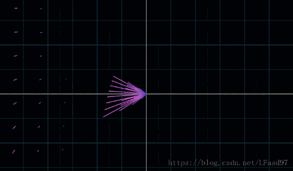
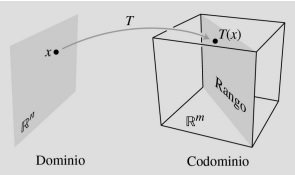
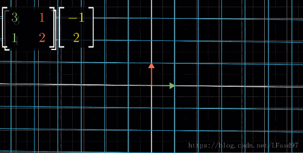

Tabla de contenidos
- 1. Introducción
- 2. Dos propiedades que definen a las transformaciones lineales
- 3. Hallando imágenes a partir de las propiedades de una TL
- 4. Hallando la matriz de una transformación lineal
- 5. Algunas transformaciones geométricas que son TL
- 6. Núcleo, Imagen y Teorema de la dimensión
- 7. Ejercitación y Autoevaluación
1. Introducción
En el libro anterior comenzamos a trabajar con transformaciones de \( \mathbb{R}^n \) en \( \mathbb{R}^m \). Éstas son funciones que asignan a cada vector del primer conjunto un único vector del segundo conjunto.
Vimos cómo obtener la imagen de algún vector a partir de la fórmula de la transformación, o a través de su expresión matricial. También trabajamos cómo encontrar la pre-imagen de un vector del segundo conjunto, es decir, dado un vector del segundo conjunto, encontrar un vector cuyo transformado sea aquel vector dado.
Además, vimos dos transformaciones geométricas especiales: la simetría con respecto a una recta y la rotación con respecto a un punto.
De todas las transformaciones posibles, existen algunas que tienen dos propiedades especiales. A lo largo de estas tres semanas, les proponemos trabajar con estas transformaciones.
2. Dos propiedades que definen a las transformaciones lineales
De todas las transformaciones posibles entre vectores de espacios vectoriales, trabajaremos con unas particulares que se llaman transformaciones lineales (TL). Hay dos propiedades especiales que cumplen las transformaciones lineales. El profesor Gastón explica en qué consisten estas propiedades en el siguiente video:
Podemos representar la ley de correspondencia de cualquier transformación lineal de \( \mathbb{R}^n \) en \( \mathbb{R}^m \) con una matriz de \( \mathbb{R}^{n\times m} \). En el siguiente video el profesor Gastón nos habla de esto.
3. Hallando imágenes a partir de las propiedades de una TL
En los videos anteriores pudimos ver cómo conseguir el transformado de un vector conociendo los transformados de otros dos. Para ello usamos que el primer vector es combinación de los otros dos, y además, aprovechamos las dos propiedades que definen a las transformaciones lineales. Por ejemplo, si tenemos una transformación lineal \( T \) de \( \mathbb{R}^3 \) en \( \mathbb{R}^2 \) que le asigna al vector \( \begin{pmatrix} 1\\ 0\\-1 \end{pmatrix} \) el vector \( \begin{pmatrix} 1\\ 1 \end{pmatrix} \) y asigna al vector \( \begin{pmatrix} 1\\ 1\\ 1 \end{pmatrix} \)el vector \( \begin{pmatrix} -1\\ 0 \end{pmatrix} \), entonces, ¿qué vector le asigna al vector \( -2\cdot \begin{pmatrix} 1\\ 0\\-1 \end{pmatrix}+3\begin{pmatrix} 1\\ 1\\1 \end{pmatrix} \)?
Bueno, será la misma combinación lineal, pero de los vectores transformados. Es decir, \(-2\cdot \begin{pmatrix} 1\\ 1 \end{pmatrix}+3\begin{pmatrix} -1\\ 0 \end{pmatrix} \), que es el vector \( \begin{pmatrix} -5\\ -2 \end{pmatrix} \). O sea que el transformado del vector \( \begin{pmatrix} 1\\ 3\\5 \end{pmatrix} \) es el vector \( \begin{pmatrix} -5\\ -2 \end{pmatrix} \).
En el siguiente video el profesor Marcelo nos muestra un ejemplo como éste.
Entonces, a partir de conocer los transformados de algunos vectores, podemos conocer los transformados de infinitos vectores. ¿Cualquier vector es combinación lineal de otros dados? ¿De cuántos vectores necesitamos conocer sus transformados (por una transformación lineal) para conocer el transformado de todos? En el siguiente video repasamos con el profesor Daniel la noción de combinación lineal, la noción de independencia/dependencia lineal de un conjunto de vectores para ir tras la respuesta de preguntas como las anteriores.
A partir del video anterior podemos ver que con un conjunto linealmente independiente de \( n \) vectores podemos conseguir todos los vectores de \( \mathbb{R}^n \). Es decir, cualquier vector de \( \mathbb{R}^n \) es una combinación lineal de los vectores de un conjunto linealmente independiente con \( n \) vectores.
Por ejemplo, cualquier vecctor de \( \mathbb{R}^3 \) es una combinación lineal de los vectores \( \begin{pmatrix} 1\\0\\0 \end{pmatrix} \), \( \begin{pmatrix} 0\\ 1\\ 0 \end{pmatrix} \) y \( \begin{pmatrix} 0\\ 0\\ 1 \end{pmatrix} \)
4. Hallando la matriz de una transformación lineal
Como vimos en el segundo video, podemos representar una transformación lineal de \( \mathbb{R}^n \) en \( \mathbb{R}^m \) usando matrices. En el siguiente video el profesor Marcelo nos muestra un camino posible para hallar la matriz de una transformación lineal de \( \mathbb{R}^2 \) en \( \mathbb{R}^2 \). Vamos a trabajar con la misma transformación del tercer video.
A continuación, el profesor Marcelo trabaja con otro ejemplo en el que hallamos la matriz de una transformación lineal de \( \mathbb{R}^3 \) en \( \mathbb{R}^3 \) a partir de conocer tres vectores (que forman un conjunto linealmente independiente) y sus transformados.
En el siguiente video, el profesor Marcelo, busca la matriz de una transformación lineal de \( \mathbb{R}^3 \) en \( \mathbb{R}^2 \) a partir de conocer tres vectores (que forman un conjunto linealmente independiente) y sus transformados.
5. Algunas transformaciones geométricas que son TL
Hay algunas transformaciones geométricas que son transformaciones lineales. Algunas de ellas son la simetría con respecto a una recta que pasa por el origen de coordenadas en \( \mathbb{R}^{2} \) y en \( \mathbb{R}^{3} \), la rotación de cualquier ángulo con centro el origen de coordenadas en \( \mathbb{R}^{2} \), la simetría con respecto a un plano en \( \mathbb{R}^{3} \), la proyección ortogonal sobre una recta por el origen en \( \mathbb{R}^2 \) y en \( \mathbb{R}^2 \), la proyección ortogonal sobre un plano por el origen en \( \mathbb{R}^3 \), entre otras.
A veces es sencillo conocer algunos transformados. Por ejemplo, si queremos conocer la matriz de simetría respecto del plano \( \pi: 2x+y-z=0 \) podemos primero intentar conocer tres vectores y sus transformados. Por ejemplo, cualquier vector que pertenece al plano se transforma en sí mismo, y cualquier vector perpendicular al plano se transforma en su opuesto. Así que tenemos que, por ejemplo:
\( T\begin{pmatrix} 2\\1\\-1 \end{pmatrix}=\begin{pmatrix} -2\\-1\\1 \end{pmatrix} \), \( T\begin{pmatrix} 1\\0\\2 \end{pmatrix}=\begin{pmatrix} 1\\0\\2 \end{pmatrix} \) y \( T\begin{pmatrix} 1\\1\\3 \end{pmatrix}=\begin{pmatrix} 1\\1\\3 \end{pmatrix} \).
Luego, como tenemos un conjunto de tres vectores de \( \mathbb{R}^{3} \) linealmente independiente y, además, también tenemos sus transformados, podemos proceder como en los videos del apartado anterior para hallar la matriz de la transformación.
En el siguiente video, retomamos la simetría con el profesor Martín T. En este caso, buscamos con Geogebra el transformado del \( \begin{pmatrix} 1\\0 \end{pmatrix} \) y del \( \begin{pmatrix} 0\\1 \end{pmatrix} \)
6. Núcleo, Imagen y Teorema de la dimensión
En esta sección abordaremos algunas propiedades de las transformaciones lineales. En particular, veremos que con conocer las imágenes de "algunos" vectores del dominio podremos tener las imágenes de todos los vectores del dominio. Esto quiere decir que con "algunos pocos" datos, podemos conocer a toda la transformación lineal.
6.1. Núcleo de \( T \)
En primer lugar, notemos que en cualquier transformación lineal \( T:\mathbb{R}^n\to\mathbb{R}^m \) ocurre que el transformado del vector nulo de \( \mathbb{R}^n \) es el vector nulo de \( \mathbb{R}^m \). Es decir, que \( T(\vec{0})=\vec{0} \). Esto se deduce en un renglón a partir de una de las dos propiedades iniciales que definen a las transformaciones lineales y teniendo en cuenta que el vector nulo es igual al número \( 0 \) multiplicado por cualquier vector.
¿Es el vector nulo el único vector del dominio de \( T \) que se transforma en el nulo? La respuesta es... depende de la transformación. En algunos casos sí, en otros no. Hay ejemplos de transformaciones lineales en las que existen otros vectores cuyo transformado es el nulo. Por ejemplo, si pensamos en una proyección ortogonal de \( \mathbb{R}^3 \) en \( \mathbb{R}^3 \) con respecto al plano \( \pi:x-z=0 \). Es decir, cualquier punto del espacio se transforma en un punto sobre el plano \( \pi \) de modo que el segmento que une al vector y su transformado es perpendicular al plano. ¿Quiénes son los vectores que se transforman en el nulo? O sea, ¿cuáles puntos del espacio que se proyectan perpendicularmente al plano van a parar al origen? Piénsenlo... Bueno... lo decimos... Cualquier punto que esté sobre la recta perpendicular al plano por el origen, en definitiva, cualquier vector perpendicular al plano, se proyecta sobre el vector nulo. En este ejemplo, esta transformación puede definirse así (pueden intentar buscarla, para ello tengan en cuenta que cualquier vector del plano se transforma en sí mismo):
\[ T:\mathbb{R}^3\to\mathbb{R}^3:T\begin{pmatrix} x\\ y\\ z \end{pmatrix}=\begin{pmatrix} \frac{1}{2} & 0 &\frac{1}{2}\\ 0 & 1 & 0\\ \frac{1}{2} & 0 & \frac{1}{2} \end{pmatrix}\cdot\begin{pmatrix} x\\ y\\ z \end{pmatrix} \]
Pueden comprobar que los vectores prependiculares al plano se transforman en el nulo usando la matriz de la transformación.
Definición
Sea \( T:\mathbb{R}^n\to\mathbb{R}^m \) una transformación lineal.
Llamaremos Núcleo de \( T \) al conjunto de todos los vectores del dominio ( \( \mathbb{R}^n \) en este caso) que se transforman en el vector nulo. Es decir, el Núcleo está formado por todos los vectores \( \vec{v}\in\mathbb{R}^n \) tales que \( T(\vec{v})=\vec{0} \). Al Núcleo también se lo suele llamar Kernel y lo notamos \( Nu(T) \) o \( Ker(T) \).Este conjunto es análogo al llamado conjunto de raíces o ceros de las funciones sobre los reales.
En forma simbólica, puede escribirse esta definición así:
Sea \( T:\mathbb{R}^n\to\mathbb{R}^m \) una transformación lineal. \( Nu(T) = \left\{ \vec{v} \in \mathbb{R}^n : T( \vec{v} ) = \vec{0} \right\} \)
6.2. Imagen de \( T \)
Por otro lado, notemos que en el ejemplo de la proyección con el que venimos trabajando, no todos los vectores del espacio son obtenidos como imagen de algún vector del dominio. Puede resultar intuitivo que como se trata de una proyección sobre un plano, todos los transformados obtenidos serán vectores del plano, y entonces, no se podrán obtener vectores que no están en él. Pueden comprobar qué sucede si intentamos buscar una preimagen del vector \( (1,2,3) \). En el libro anterior, en el apartado ¿Cómo hallamos una preimagen? pueden revisar cómo hacerlo.
Definición
Sea \( T:\mathbb{R}^n\to\mathbb{R}^m \) una transformación lineal.
Llamaremos Imagen de \( T \) al conjunto de todos los vectores del codominio de \( T \) que son imágen de algún vector del dominio de la transformación. Es decir, la Imagen está formada por todos los vectores \( \vec{w} \in\mathbb{R}^m \) para los cuales existe \( \vec{v}\in\mathbb{R}^n \) tal que \( T(\vec{v})=\vec{w} \).
A la imagen también se la suele llamar Recorrido de \( T \) y lo notamos \( Im(T) \).
6.3. Núcleo e Imagen de una TL son espacioes vectoriales
Notemos que buscar el núcleo de una transformación lineal implica resolver un sistema de ecuaciones lineales homogéno. En el apartado Algunas propiedades de las soluciones de un sistema homogéneo de Libro 1 vimos que las soluciones de los sistemas homogéneos cumplen con las propiedades que caracterizan a los espacios vectoriales y que mencionamos en el apartado Propiedades de un Espacio Vectorial del Libro 2. En definitiva, el Núcleo de cualquier transformación lineal es un espacio vectorial (es un subespacio vectorial de \( \mathbb{R}^n \)).
Algo similar ocurre con la imagen. Si queremos hallar la imagen de una transformación lineal, según vimos, planteamos al producto de la matriz por el vector genérico del dominio como combinación lineal. Finalmente, tenemos un sistema de generadores de un espacio vectorial. Y podemos plantear una base.
A partir de estas dos cuestiones, podemos plantear el siguiente teorema (para ver una demostración pueden consultar la página 256 a 262 del libro Howard, A. (1994). Introducción al Álgebra Lineal.).
Teorema:
Sea \( T:\mathbb{R}^n\to\mathbb{R}^m \) una transformación lineal, entonces..
...\( Nu(T) \) es un espacio vectorial.
..\( Im(T) \) es un espacio vectorial.
Ejemplos:
El profe Gastón hizo este Video con ejemplos en los que buscamos el núcleo de una TL. Al verlo, notarán que se necesita resolver un sistema homogéneo. Para repasar sobre esto, pueden volver a revisar los temas del Libro 1 de esta segunda parte y/o del Libro 5: Apartado 4.¿Qué es un sistema de ecuaciones lineales? de la primera parte.
El profe Claudio nos acerca este Video con ejemplos en los que buscamos la imagen de una TL. En este caso, habrán advertido que es importante reconocer si un conjunto de vectores es linealmente independiente o no. En el siguiente video, el profe Martín T. nos muestra ejemplos de cómo averguar esto.
6.4 ¿Cómo queda determinada una TL?
De acuerdo con lo que venimos diciendo, si tanto el Núcleo como la Imagen son espacios vectoriales, ambos quedan completamente caracterizados a partir de una base.
Además, supongamos que \( B=\left\{ \vec{v_1}, \vec{v_2}, \dots, \vec{v_n}\right\} \) es una base del espacio vectorial \( \mathbb{R}^n \) y \( T:\mathbb{R}^n\to\mathbb{R}^m \) es una transformación lineal. En caso de que conozcamos las imágenes de los vectores de la base por la la transformación lineal \( T \), es decir, si sabemos que \( T(\vec{v_1})=\vec{w_1}, T(\vec{v_2})=\vec{w_2}, \dots, T(\vec{v_n})=\vec{w_n} \) con cada \( \vec{w_i}\in \mathbb{R}^m \) entonces, conoceremos la imagen de cualquier vector del dominio de \( T \).
En efecto, para cualquier vector \( \vec{X}\in\mathbb{R}^n \), existen escalares \( \alpha_1, \alpha_2,\dots, \alpha_n\in\mathbb{R} \) tales que \( \vec{X}=\alpha_1\vec{v_1} +\alpha_2\vec{v_2} +\cdots+\alpha_n\vec{v_n} \). Y, aprovechando la propiedad que define a las transformaciones lineales tenemos que:
\( T(\vec{X})=T\left(\alpha_1\vec{v_1} +\alpha_2\vec{v_2} +\cdots+\alpha_n\vec{v_n} \right)= \alpha_1T(\vec{v_1}) +\alpha_2T(\vec{v_2}) +\cdots+\alpha_nT(\vec{v_n})=\alpha_1\vec{w_1} +\alpha_2\vec{w_2} +\cdots+\alpha_n\vec{w_n} \)
Es decir, una transformación lineal queda completamente determinada si conocemos las imágenes de los vectores de una base del dominio.
6.5. Teorema de la dimensión y caracterización de la solución de los sitemas homogéneos
Finalmente, presentamos el teorema de la dimensión que relaciona las dimensiones del dominio, Núcleo e Imagen de la transformación lineal.
Teorema de la dimensión
Si \( T:\mathbb{R}^n\to\mathbb{R}^m \), entonces, la suma de la dimensión del Núcleo más la dimensión de la Imagen es igual a la dimensión del Dominio de \( T \). Es decir,
\( Dim(Nu(T))+Dim(Im(T))=n \)
Una consecuencia inmediata de este teorema nos permite caractarizar a las soluciones de cualquier sistema de ecuaciones lineales homogéno.
Teorema
Si \( A \) es una matriz de \(m \times n \), entonces, la dimensión del espacio vectorial de soluciones del sistema de ecuaciones lineales homogéno asociado a la matriz es \( n - Rg(A) \).
En donde \( \) es el rango de \( A \),es decir, la cantidad de vectores columna (o vectores fila) de la matriz que forman un conjunto linealmente independiente.
7. Ejercitación y Autoevaluación
Ejercitación
Para ejercitación sobre el tema que trabajamos en este libro, tienen el Listado de actividades para realizar sobre transformaciones lineales. La idea es que los puedan pensar y hacer (si se juntan para hacerlos, mejor) y plantear sus dudas y resoluciones en el foro Consultas y en el aula. Para uno de los ejercicios de práctica van a necesitar los Archivos GGB para el problema 24 de la página 110 de la Guía de Problemas.
Autoevaluación
Durante la segunda de estas dos semanas tendrán habilitada la Autoevaluación sobre transformaciones lineales que forma parte de la evaluación continua (ingresen para poder ver la fecha de habilitación).